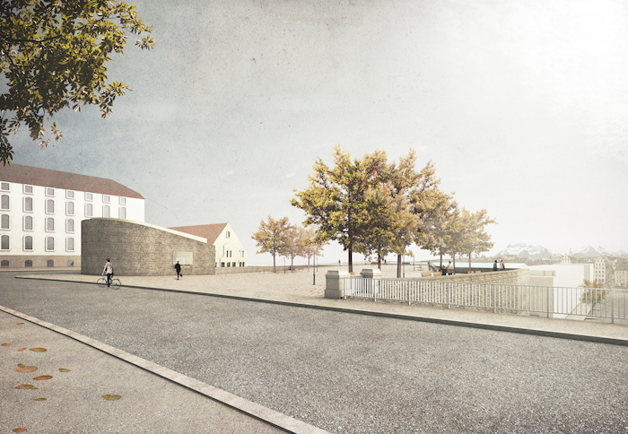

28.02.2017 BASTION ST-ANTOINE GENÈVE, 5ème prix
NYX architectes GmbH obtient le 5ème prix lors du concours ouvert d’architecture pour la mise en valeur du site archéologique et l’aménagement du Bastion St-Antoine à Genève. Le projet a été retenu parmi 91 propositions.